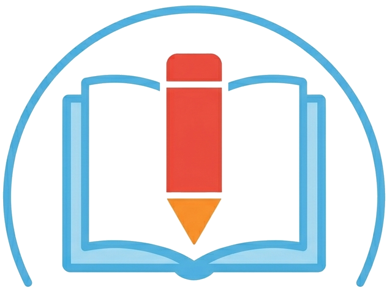
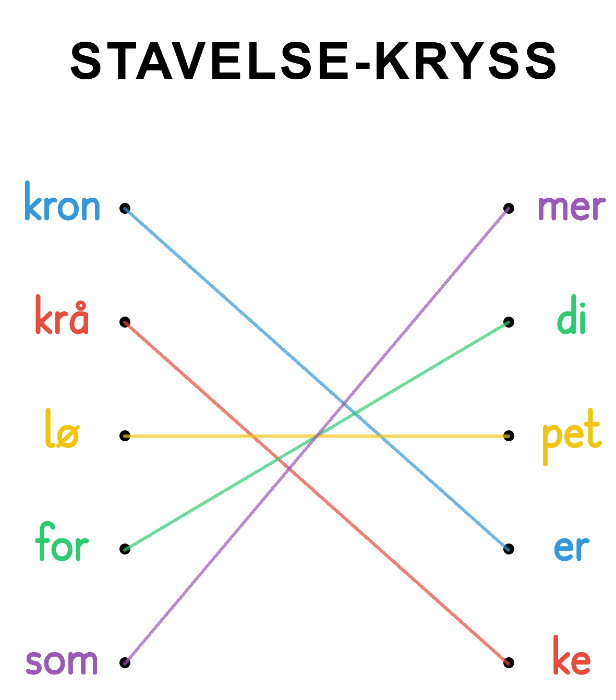

Bingo
Gitter-ord

Les og skriv
Ordsøk
Silhuett-ord
Stavelser
Stavelse-kryss
Font
Trykkskrift
Skogstavskrift
Andika
Monospace
Comic Sans
Arial
Skriftstørrelse
16 px
20 px
24 px
28 px
32 px
36 px
40 px
44 px
48 px
Antall stavelser
2 stavelser
3 stavelser
4 stavelser
Antall ord
1 ord
2 ord
3 ord
4 ord
5 ord
6 ord
7 ord
8 ord
9 ord
10 ord
11 ord
12 ord
STORE bokstaver
Fet skrift
Vis fasit
LAG STAVELSE-KRYSS
NULLSTILL
ENDRE REKKEFØLGE
SKRIV UT

 Bingo
Bingo
 Gitter-ord
Gitter-ord
 Silhuett-ord
Silhuett-ord
 Stavelser
Stavelser